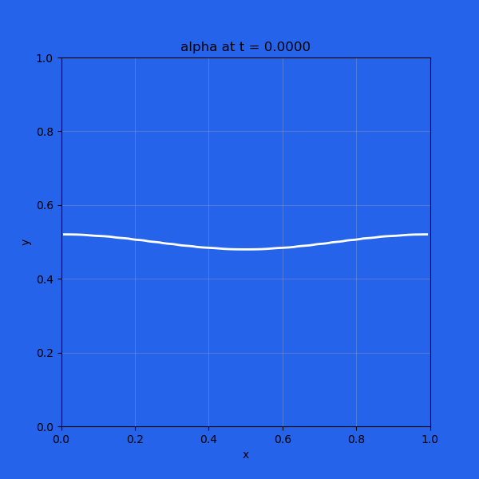
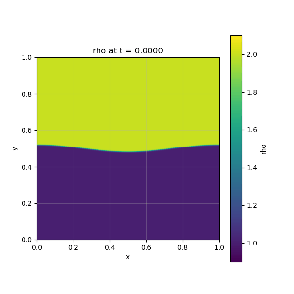

rayleigh_taylor_2d
Description
2D compressible two-phase Rayleigh–Taylor setup using the 5-equation FV solver with HLLC flux, optional gravity source, and directional boundary conditions. The case is configured as x-periodic and y-reflective, with a sinusoidally perturbed material interface.
How to run
python run.py unit_tests/rayleigh_taylor_2d.yamlConfig summary
- Domain: x ∈ [0, 1] (96 cells), y ∈ [0, 1] (192 cells)
- Time: dt = 1e-4, 6000 steps (t_final = 0.6), ~20 GIF frames
- Physics: euler mode, two_phase_model: 5eq, FV, HLLC flux
- Phases: phase1 (rho_ref=2.0), phase2 (rho_ref=1.0), both ideal-gas (gamma=1.4)
- IC: RTI interface at y=0.5 with cosine perturbation (amplitude 0.02)
- Gravity: optional via
physics.gravity.enabled(default on, gy=-400) - BCs:
euler_bc_x: periodic,euler_bc_y: reflective - Density colormap bounds:
vmin=0.9,vmax=2.1(for clearer pcolormesh contrast)
Outputs
This case writes alpha.gif, rho.gif, and text snapshots under the run directory. The reference YAML is available at rayleigh_taylor_2d.yaml.
Volume fraction (alpha)

Density (rho)
